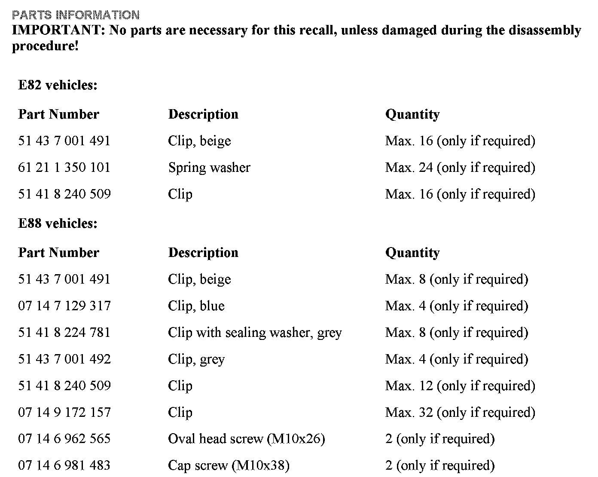
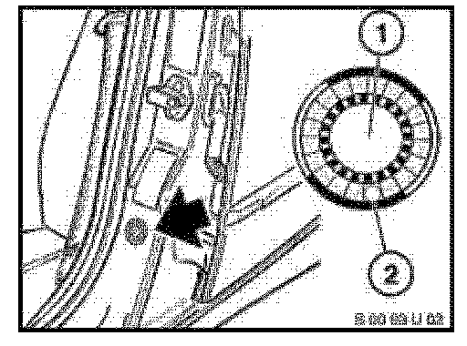
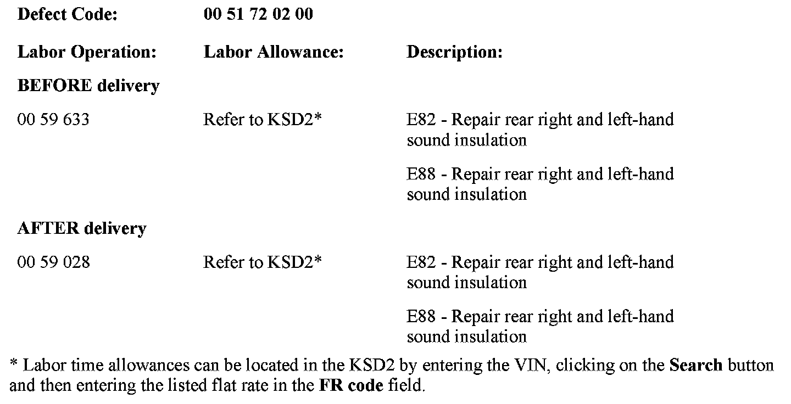
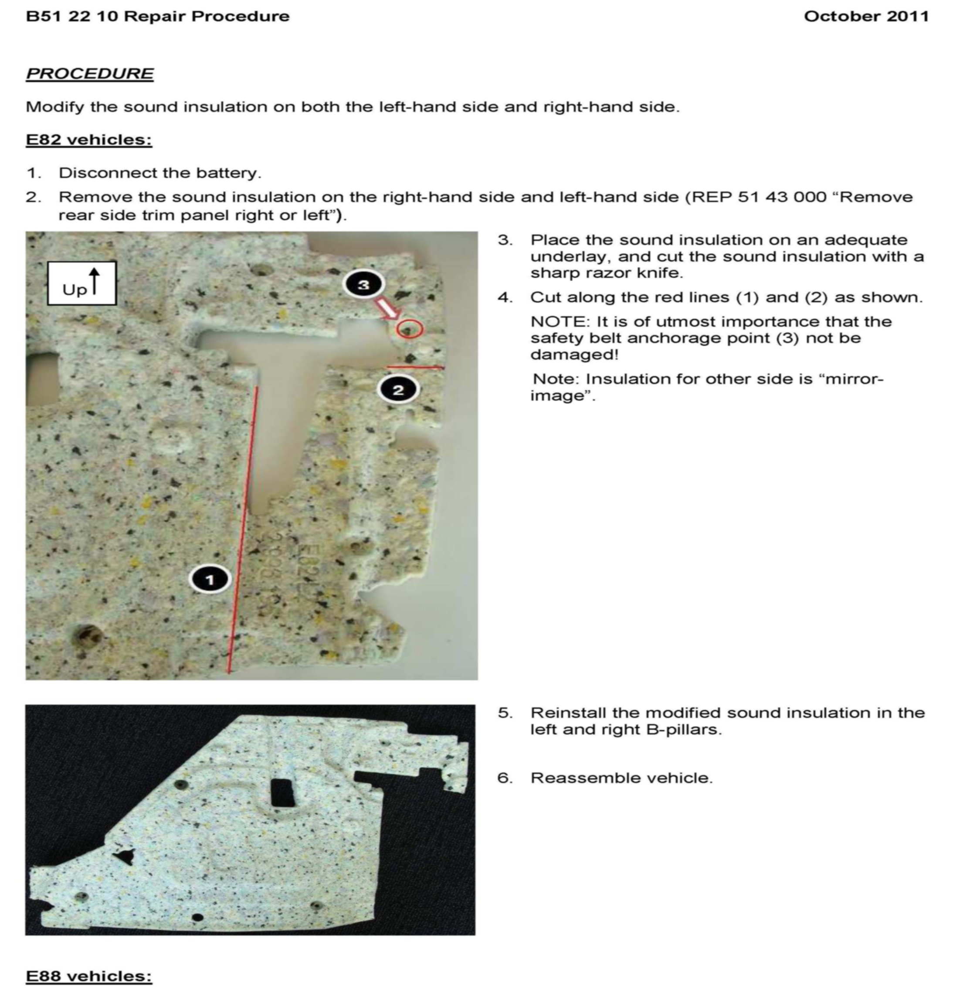
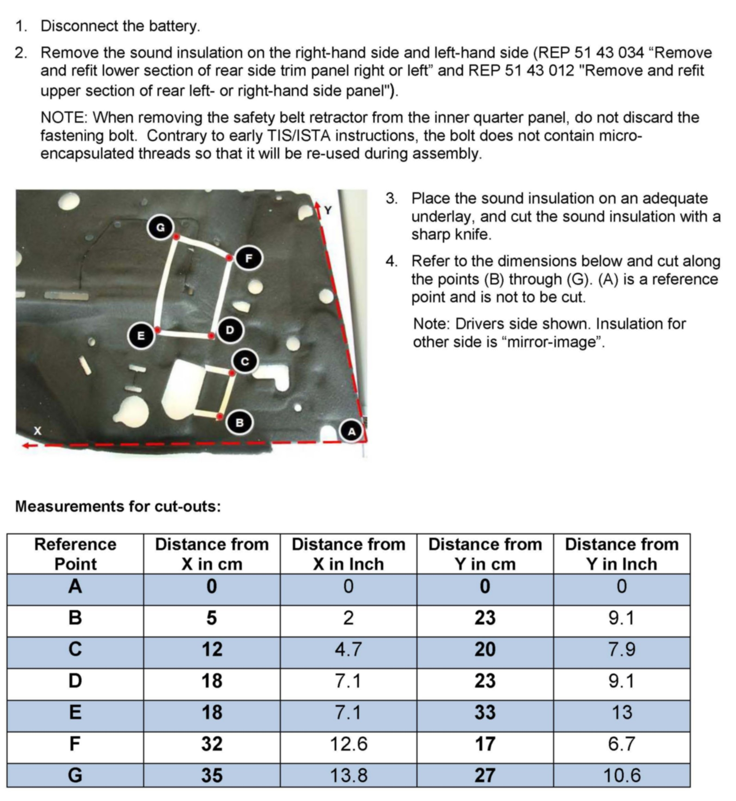
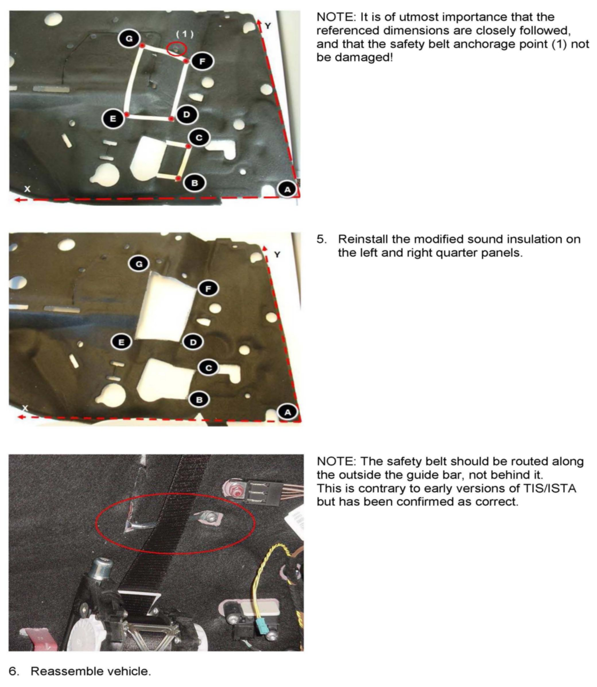

Recall 10V-254 - Modify Sound Insulation
SI B51 22 10Body Equipment
October 2011
Technical Service
This Service Information bulletin supersedes SI B51 22 10 dated July 2010.
PERFORM THE PROCEDURE OUTLINED IN THIS SERVICE INFORMATION ON ALL AFFECTED VEHICLES BEFORE CUSTOMER DELIVERY OR THE NEXT TIME THEY ARE IN THE SHOP FOR MAINTENANCE OR REPAIRS.
Under the National Traffic and Motor Vehicle Safety Act of 1966, as amended, if there has been a recall campaign, dealers must assure that all new vehicles and new items of replacement equipment are free of safety defects and comply with all applicable Federal Motor Vehicle Safety Standards at the time of delivery to the consumer. This means that dealers may not deliver new motor vehicles or new items of replacement equipment to consumers unless the safety defect or noncompliance has been remedied before delivery.
[NEW] designates changes to this revision
SUBJECT
Recall Campaign 10V-254: Modify Sound Insulation
MODEL
E82, E88 (1 Series)
SITUATION
In a crash of sufficient severity, deployment of the front pre-tensioner and load-limiter occurs. This is normal. However, in rare circumstances, it is possible that the insulation around the pre-tensioner could ignite.
CAUSE
The distance between the safety belt retractor units and the sound insulation located in the B-pillar is too small.
AFFECTED VEHICLES
[NEW] This Recall involves 1 Series vehicles which were produced from January 25, 2008 to May 27, 2010.
In order to determine whether a specific vehicle has had this Recall Campaign completed or is affected by this Recall Campaign, first check the B-pillar label for code number 565. If code number 565 has been punched out, the campaign has already been performed. If code number 565 has not been punched out, it will be necessary to utilize the "Service Menu" of DCSnet (Dealer Communication System) or the Key Reader. Based on the response of the system, either proceed with the corrective action or take no further action.
CORRECTION
Modify the sound insulation on both the left-hand side and right-hand side.
PROCEDURE
Refer to the attached Repair Procedure.

PARTS INFORMATION
LABEL INSTRUCTIONS
This Recall Campaign has been assigned code number 565. After the vehicle has been checked and/or corrected, obtain a label (SD 92-380) and:
A. Emboss your BMW center warranty number in the middle of the label (1);
B. Punch out code number 565 (2), printed on the label; and

C. Affix the label to the B-pillar as shown.
If the vehicle already has a label from a previous Service Action/Recall Campaign, affix the new label next to the old one. Do not affix one label on top of another one, because a number from an underlying label could appear in the punched-out hole of the new label.
WARRANTY INFORMATION
The repair described in this bulletin is covered under warranty regardless of time or mileage. Reimbursement for this Recall will be via normal claim entry utilizing the following information:

ATTACHMENTS



SI B51 22 10 - Repair_Procedure.